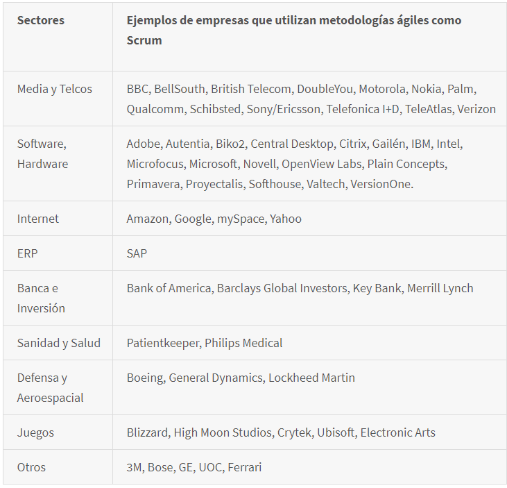
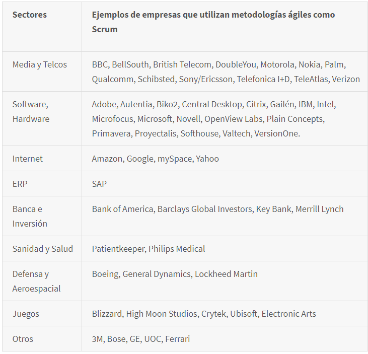

Areas donde se utiliza Scrum
A continuación se enlistarán algunas empresas que utilizan esta metodología junto al área en la que operan:

A continuación se enlistarán algunas empresas que utilizan esta metodología junto al área en la que operan:
